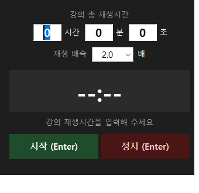

06 / 08
강의 배속 타이머
2배속 강의가 끝나는 시각을 미리 알려주는 타이머.

강의 총 재생시간과 배속을 입력하면 실제로 기다려야 하는 시간을 계산해 카운트다운합니다. 남은 시간과 함께 알람이 울릴 시각을 보여 주기 때문에 다음 일정을 잡기 쉽습니다.
Enter로 시작하고 멈추며, 알람이 울리면 창이 최전면으로 올라옵니다. 알람 10초 뒤에는 자동으로 종료됩니다.
주요 기능
Features- 01시·분·초 + 1.0~3.0배속 입력
- 02길이÷배속 자동 계산
- 03남은 시간과 알람 예정 시각 동시 표시
- 04Enter로 시작·정지, 알람 10초 후 자동 종료
- 05알람 시 창을 최전면으로 호출
- 06창 위치 저장·복원
기술 노트
Engineering- 01
time.monotonic을 기준으로 계산해, 배속 재생 중에도 오차가 누적되지 않습니다.
- 02
CreateMutexW와 FindWindowW로 중복 실행을 감지하고, 이미 켜져 있으면 기존 창만 앞으로 불러옵니다.
- 03
숫자 입력을 세 자리로 제한하고, 포커스가 오면 전체 선택해 바로 덮어쓸 수 있게 했습니다.
사용 기술
Stack- Python
- Tkinter
- threading
- winsound
- ctypes
- PyInstaller